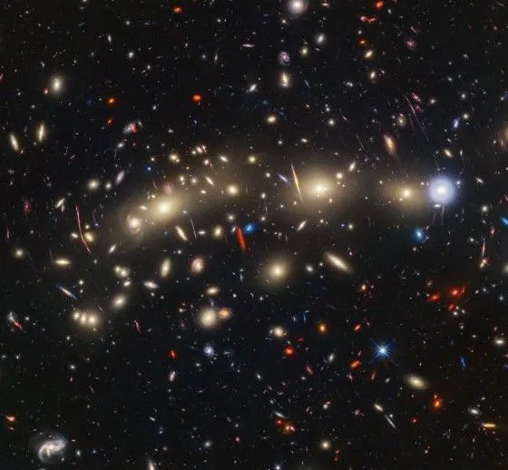
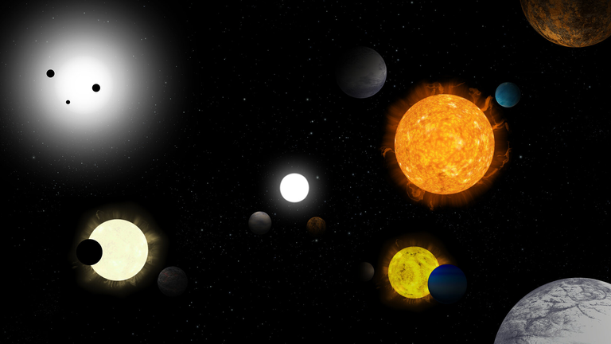

“Árvore de Natal” cósmica deslumbra em nova imagem dos telescópios Hubble e Webb.
Astrônomos usaram os poderes combinados dos telescópios Hubble e Webb para retratar aglomerados de galáxias em colisão, chamados de Aglomerado de Galáxias da Árvore de Natal.

Um panorama de aglomerados de galáxias em colisão brilha em uma nova imagem capturada pelas forças combinadas dos dois mais poderosos observatórios espaciais já criados.
O fenômeno cósmico, denominado MACS0416, está a 4,3 bilhões de anos-luz da Terra. Eventualmente, o par de aglomerados gigantes em fusão se combinará para formar uma coleção ainda maior de galáxias brilhantes.
Novos detalhes da característica celestial surgiram na imagem colorida, que une os poderes de observação do Telescópio Espacial Hubble
na luz visível e do Telescópio Espacial James Webb na luz infravermelha, que é invisível ao olho humano.
"Árvore de Natal"
Astrônomos usaram os poderes combinados dos telescópios Hubble e Webb para retratar aglomerados de galáxias em colisão, chamados de Aglomerado de Galáxias da Árvore de Natal.
Publicado em 11 de Novembro de 2023
Saiba mais...
Descoberta de Novos Exoplanetas
A NASA anunciou a descoberta de vinte novos exoplanetas orbitando estrelas distantes.
Os membros do projeto CARMENES acabam de publicar o primeiro conjunto de dados. Após cinco anos de coleta de medidas
da luz de mais de 300 estrelas, os astrônomos que participam da iniciativa anunciaram a descoberta de 59 exoplanetas. Em meio a este total, 33 são mundos novos, que se somam a 26 já confirmados a partir de estudos anteriores.
O projeto realizou também novas análises de 17 exoplanetas já conhecidos. Todos os exoplanetas ficam a até 65 anos-luz da Terra, ou seja, estão relativamente próximos. Eles orbitam estrelas anãs vermelhas e seis foram descritos
como “potencialmente habitáveis”, o que significa que são rochosos e que podem ter água no estado líquido na superfície.
O projeto CARMENES foca na procura de exoplanetas rochosos e parecidos com a Terra. Para isso, a iniciativa trabalha com o instrumento homônimo instalado no observatório Calar Alto, na Espanha, que contém dois espectrógrafos.
Eles coletam dados da luz visível e em comprimentos de onda do infravermelho.

Publicado em 03 de Março de 2023
Saiba mais...
Mars Rover Encontra Evidências de Água
O rover da NASA em Marte encontrou sinais promissores de antigas fontes de água no planeta vermelho.
Publicado em 10 de Dezembro de 2023